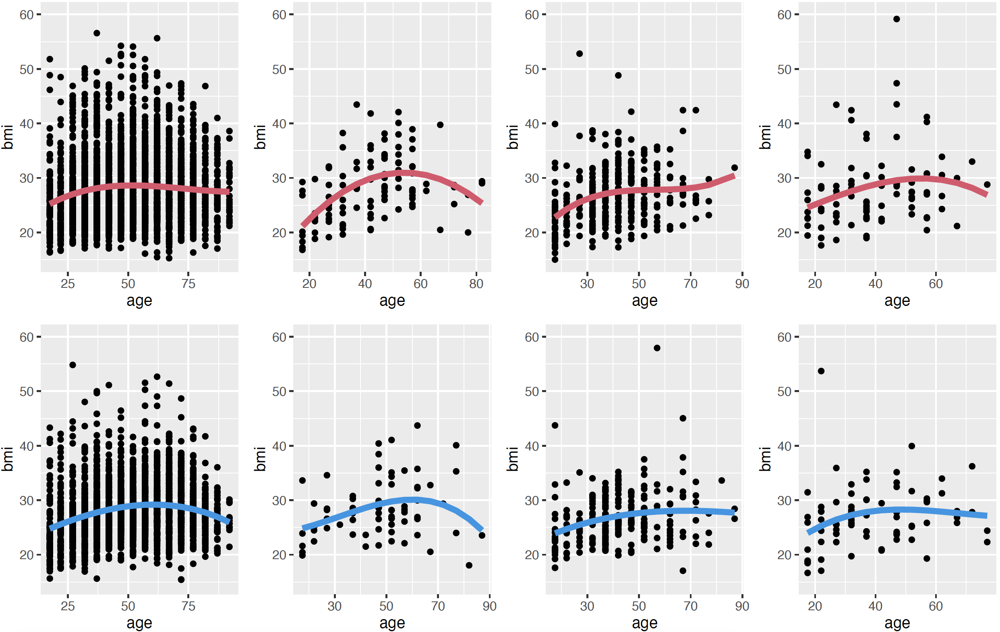
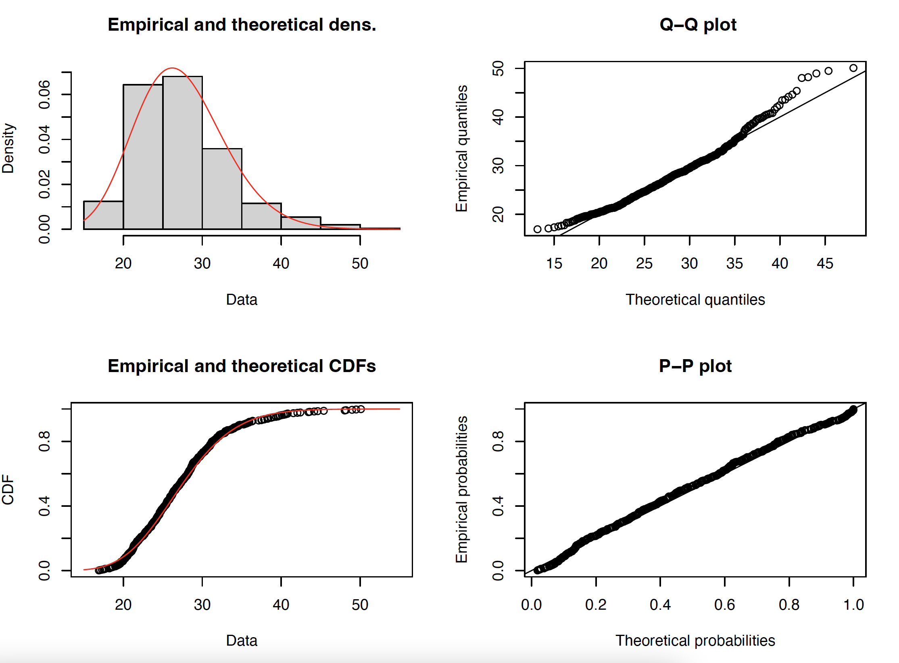

7 Modelling methods
The principles behind the generation of the enriched SPENSER population data and behind the modelling of trips to schools and retail from QUANT are detailed in
Spooner F et al. A dynamic microsimulation model for epidemics. Soc Sci Med. 291:114461 (2021). (DOI)
7.1 Commuting flows
In order to distribute each individual of the population to a unique physical workplace, we first created a population of all individual workplaces in England, based on a combination of the Nomis UK Business Counts 2020 dataset and the Nomis Business register and Employment Survey 2015 (see Data sources). The first dataset gives the number of individual workplace counts per industry, using the SIC 2007 industry classification, with imprecise size (i.e. number of employees) bands at MSOA level. The second dataset gives the total number of jobs available at LSOA level per SIC 2007 industry category. We found that the distribution of workplace sizes follows closely a simple 1/x distribution, allowing us to draw for each workplace a size within their band, with sum constraints given by the total number of jobs available, according to the second dataset.
The workplace ‘population’ and individual population are then levelled for each SIC 2007 category by removing the exceeding part of whichever dataset lists more items. This takes into account that people and business companies are likely to over-report their working availability (e.g. part time and seasonal contracts are not counted differently than full time contracts, jobseekers or people on maternity leave might report the SIC of their last job). This process can be controlled by a threshold in the parameter file that defines the maximal total proportion of workers or jobs that can be removed. If the two datasets cannot be levelled accordingly, the categories are dropped and the datasets are levelled globally. Tests in the West Yorkshire area have shown than when the level 1 SIC, containing 21 unique categories, is used, 90% of the volume of commuting flows were recovered compared to the Nomis commuting OD matrices at MSOA level.
The employees for each workplace are drawn according to the ‘universal law of visitation’, see
Schläpfer M et al. The universal visitation law of human mobility. Nature 593, 522–527 (2021). (DOI)
This framework predicts that visitors to any destination follow a simple
ρ(r,f)= K / (rf)2
distribution, where ρ(r,f) is the density of visitors coming from a distance r with frequency f and K is a balancing constant depending on the specific area. In the context of commuting, it can be assumed that f = 1. Additionally, we only need to weigh potential employees against each other, which removes the necessity to compute explicitly K. In the West Yorkshire test, we found a Pearson coefficient of 0.7 between the predicted flows when aggregated at MSOA level and the OD matrix at MSOA level available from Nomis.
7.2 Income data
This modelling is mainly based on the 2020 revised edition of the Earnings and hours worked, region by occupation by four-digit SOC: ASHE Table 15 database from ONS. Some percentiles for employees’ gross hourly salaries are provided for each full-time and part-time job according to their four-digit SOC classification per region, and separated by sex.
7.2.1 Methods
The data are far from complete (only about 15% of all possible values), especially for the highest deciles. We found that an order 3 polynomial fit was satisfactory for most categories (93.11%) to complete the partially filled SOCs. SOCs with too many missing values are given the value for the category that is immediately higher in the SOC hierarchy. Some jobs appear to have a ‘ceiling’ for the highest percentiles, making the polynomial fit fail. In that case, we have replaced the unknown values by the highest known value in the raw data (as there is no clear and systemic fit for these special cases). In addition, there is no information for the highest decile in all cases, which means that the highest salaries are underestimated (and exceptionally high salaries cannot be obtained). The result of this phase is four tables {male full-time, male part-time, female full-time, female part-time} containing the coefficients of the fitted order 3 polynomial, with an optional ceiling percentile when relevant.
A percentile is chosen randomly (uniformly) for each individual, and the salary is then deduced according to their full-time/part-time status, region, sex and SOC category. A basic hourly salary column is added to the unprocessed SPC data, as well as a corresponding annual salary based on their estimated hours worked per day, according to the Time Use Survey matching. In addition, we repeat this process for all individuals that are categorised as ‘Self-employed’ or ‘Employee unspecified’ by the Time Use Survey matching,, as if they were full time employees. These values are recorded in the columns IncomeHAsIF and IncomeYAsIf. We noticed that a high number of employees were given no worked hours by the Time Use Survey. We have added to the IncomeYAsIf column an estimation of their annual salary based on Table 15.9a: Paid hours worked - Total 2020, and also depending on the same four variables as above (full-time/part-time status, region, sex and SOC category).
In addition, age data are made available by ONS. Part of the differences that can be observed between different age groups are already taken into account through the fact that the SOC category can evolve during a career. To take into account that dependence, we first run the above method without weighing by age. The results are shown in the age validation section below. The residual impact of age alone is then added to the model in the following way. When the percentile is drawn for a specific individual, it is morphed to fit within the usual percentage range accessible to that age category. The function that operates this morphing is inferred beforehand and takes into account the salary distribution per age computed by the previous non-age weighted iteration of the modelling (see figure - TBA - for a more detailed description of this function).
The R codes for this modelling are here.
The methods are validated in the next section. Since it is not possible to optimise every criterion at once, this next secton can also be used as a reference to re-adjust some values to match exactly the ONS estimated means for one particular criterion of interest.
7.2.2 Comparison to reference values from ONS
We compare the results of the modelling to the raw datasets from ONS.
Modfor modelledMfor maleFfor femaleHfor hourly gross salaryYfor annual gross salaryFTfor full-TimePTfor part-Time- Only individuals recorded as employees (i.e. not self-employed) are taken into account in this section.
Number of employees per sex and full-time/part-time classification
The numbers given by ONS vary from dataset to dataset and are reported by ONS as indicative only. For the modelled values, we give the total number of individuals with a non-zero salary in each category.
| Variable | All | FT | PT | M | M FT | M PT | F | F FT | F PT |
|---|---|---|---|---|---|---|---|---|---|
| ONS tot | 22-26k | 16-19k | 6-8k | 11-13k | 9-11k | 1.5-2k | 11-13k | 6.5-7.5k | 4.5-5.5k |
| Mod tot H | 23.1k | 18.5k | 4.6k | 11.8k | 11k | 0.8k | 11.3k | 7.5k | 3.8k |
| Mod tot Y | 17.6k | 14.8k | 2.8k | 9.4k | 8.9k | 0.5k | 8.2k | 5.9k | 2.3k |
A significant number of individuals listed as working either full or part time have 0 effective worked hours per day according to the Time Use Survey matching. In those cases, an hourly salary is modelled depending on their SOC, region and sex, as for any other employee, but the annual salary will be displayed as 0. It is possible to estimate their likely true number of hours worked from the same ONS dataset (Table 15.9a: Paid hours worked - Total 2020), also depending on their sex, soc and region. This calculation has been added to the “As If” column.
Hourly gross salary per sex and full-time/part-time classification
| Variable | All | FT | PT | M | M FT | M PT | F | F FT | F PT |
|---|---|---|---|---|---|---|---|---|---|
| ONS mean | 17.63 | 18.32 | 13.93 | 18.81 | 19.12 | 14.69 | 16.19 | 17.08 | 13.68 |
| ONS median | 13.71 | 15.15 | 10.38 | 14.84 | 15.58 | 10.12 | 12.58 | 14.42 | 10.47 |
| Mod mean | 16.45 | 17.19 | 13.45 | 17.50 | 17.84 | 12.75 | 15.35 | 16.23 | 13.60 |
| Mod median | 13.55 | 14.46 | 10.23 | 14.27 | 14.72 | 9.16 | 12.79 | 14.12 | 10.51 |
The median values are quite close to the ONS values, but the mean values are always lower. This is expected, see the description of the modelling above.
Annual gross salary per sex and full-time/part-time classification
Only values > 0 are retained for these calculations.
| Variable | All | FT | PT | M | M FT | M PT | F | F FT | F PT |
|---|---|---|---|---|---|---|---|---|---|
| ONS mean | 31,646 | 38,552 | 13,819 | 38,421 | 42,072 | 14,796 | 24,871 | 33,253 | 13,512 |
| ONS median | 25,886 | 31,487 | 11,240 | 31,393 | 33,915 | 10,883 | 20,614 | 28,002 | 4,743 |
| Mod mean | 34,317 | 36,595 | 22,257 | 37,574 | 38,496 | 20,698 | 30,594 | 33,729 | 22,585 |
| Mod median | 28,713 | 30,942 | 17,928 | 31,404 | 32,382 | 17,382 | 25,875 | 29,028 | 18,137 |
The average salary for part-time employees is correct when values equal to 0 are taken into account. This suggests that the total number of hours worked for part-time employees is correct, but the way they are distributed among individuals is not. It could be due to the TUS taking a snapshot of the situation during a particular week, rather than averaging their data over the year. It appears that the TUS matching also overestimates the average number of hours worked for female employees.
Regional differences (hourly gross salary)
| Region | East | East Midlands | London | North East | North West | South East | South West | West Midlands | Yorkshire and The Humber |
|---|---|---|---|---|---|---|---|---|---|
| ONS mean | 16.74 | 15.87 | 23.78 | 15.69 | 16.36 | 17.88 | 16.36 | 16.34 | 15.76 |
| ONS median | 13.28 | 12.65 | 18.30 | 12.40 | 12.90 | 14.33 | 12.74 | 12.92 | 12.46 |
| Mod mean | 16.67 | 15.29 | 19.39 | 15.05 | 15.22 | 17.34 | 15.92 | 15.47 | 14.41 |
| Mod median | 13.69 | 12.79 | 16.25 | 12.42 | 12.44 | 14.84 | 13.35 | 12.64 | 12.44 |
The pearson correlations for mean and median between the modelled and raw values are 0.92 and and 0.93.
Hourly gross salary per one-digit SOC
| 1d SOC | 1 | 2 | 3 | 4 | 5 | 6 | 7 | 8 | 9 |
|---|---|---|---|---|---|---|---|---|---|
| ONS mean | 26.77 | 23.38 | 18.29 | 13.42 | 13.35 | 10.87 | 10.94 | 12.23 | 10.77 |
| ONS median | 20.96 | 21.34 | 15.66 | 11.54 | 12.04 | 10.08 | 9.52 | 10.93 | 9.22 |
| Mod mean | 21.52 | 22.14 | 16.00 | 12.76 | 12.55 | 10.49 | 10.50 | 12.05 | 9.87 |
| Mod median | 17.22 | 20.66 | 14.12 | 11.46 | 11.34 | 9.71 | 9.59 | 10.82 | 9.12 |
- Managers, directors and senior officials
- Professional occupations
- Associate professional and technical occupations
- Administrative and secretarial occupations
- Skilled trades occupations
- Caring, leisure and other service occupations
- Sales and customer service occupations
- Process, plant and machine operatives
- Elementary occupations.
The pearson correlations for mean and median between the modelled and raw values are 0.98 and 0.98.
Hourly gross salary per age
The reference for this table is: Table 6.5a Hourly pay - Gross 2020
Table before weighting by age:
| Age | 16-17 | 18-21 | 22-29 | 30-39 | 40-49 | 50-59 | 60+ |
|---|---|---|---|---|---|---|---|
| ONS mean | 7.21 | 9.59 | 14.09 | 18.13 | 20.04 | 19.12 | 16.32 |
| ONS median | 6.36 | 9.00 | 12.26 | 15.08 | 15.89 | 14.39 | 12.17 |
| Mod mean | 12.77 | 14.96 | 16.33 | 16.93 | 16.83 | 16.66 | 16.29 |
| Mod median | 10.93 | 12.71 | 13.88 | 14.02 | 13.96 | 13.85 | 13.65 |
The pearson correlations for mean and median between the modelled and raw values are 0.92 and 0.92.
Table after weighting by age:
| Age | 16-17 | 18-21 | 22-29 | 30-39 | 40-49 | 50-59 | 60+ |
|---|---|---|---|---|---|---|---|
| ONS mean | 7.21 | 9.59 | 14.09 | 18.13 | 20.04 | 19.12 | 16.32 |
| ONS median | 6.36 | 9.00 | 12.26 | 15.08 | 15.89 | 14.39 | 12.17 |
| Mod mean | 9.05 | 11.15 | 14.87 | 17.35 | 17.96 | 17.47 | 15.41 |
| Mod median | 8.20 | 9.51 | 12.86 | 14.41 | 14.78 | 14.43 | 12.56 |
The pearson correlations for mean and median between the modelled and raw values are 0.99 and 0.99.
7.3 BMI data
Body Max Index (BMI) is calculated for each individual from the Health Survey for England 2019 (access needs to be requested to the UK Data Service). This calculation is completely indepedent from the PSM to the HSE 2017, and therefore the new BMI values will not fit within the categories indicated by this earlier PSM. As the BMI variable is not necessarily independent from the other health variables (diabetes etc.), the new variable should only be used for studies where all other variables are considered equal. The new variable is continuous (a float).
According to the HSE 2019, the distribution of BMI values should follow figure 1. Socio-economic category was discarded for the modelling as it is not independent from the other variables and “mixed” and “other” ethnicities have been merged due to small sample sizes.
 Figure 1. BMI per age. Columns represent ethnicity (White, Black, Asian, Other), and the rows sex (female, male).
The distribution for each age group is a gamma distribution. See figure 2.
 Figure 2. Distribution of BMI values for white females aged 30-34.
Due to small sample sizes, the BMI is calculated for each individual depending on their age according to a gamma distribution whose mean is the mean for the corrresponding age, sex and ethnicity (thick line in figure 1), but whose variance is only determined by the total variance by sex and ethnicity. The resulting BMI where validated for Bedfordshire, and correlations of 0.93 and 0.97 were found between the mean and variance of the modelled data compared to those for the reference HSE 2019 data. See figure 3. The distribution per age, as in figure 1, were also validated.
 Figure 3. Modelled mean and variance compared to the reference mean and variance from the HSE 2019 data for each of the eight categories of figure 1.
Figure 3. Modelled mean and variance compared to the reference mean and variance from the HSE 2019 data for each of the eight categories of figure 1.
The R codes for this modelling are here.